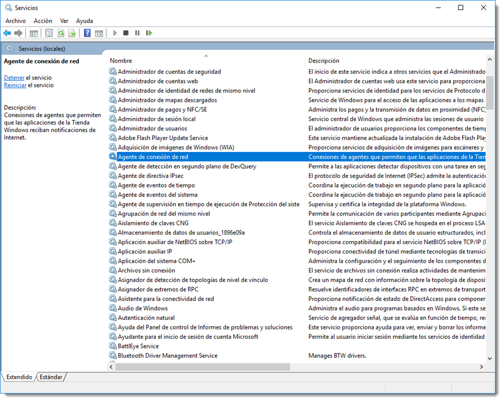
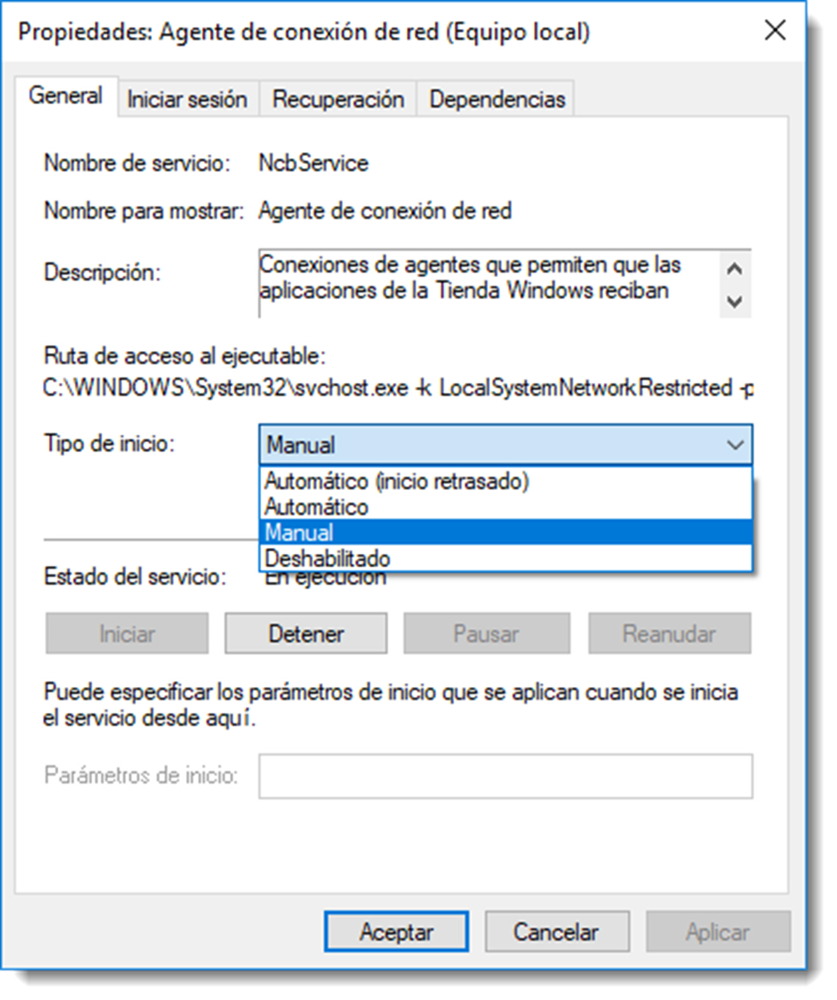
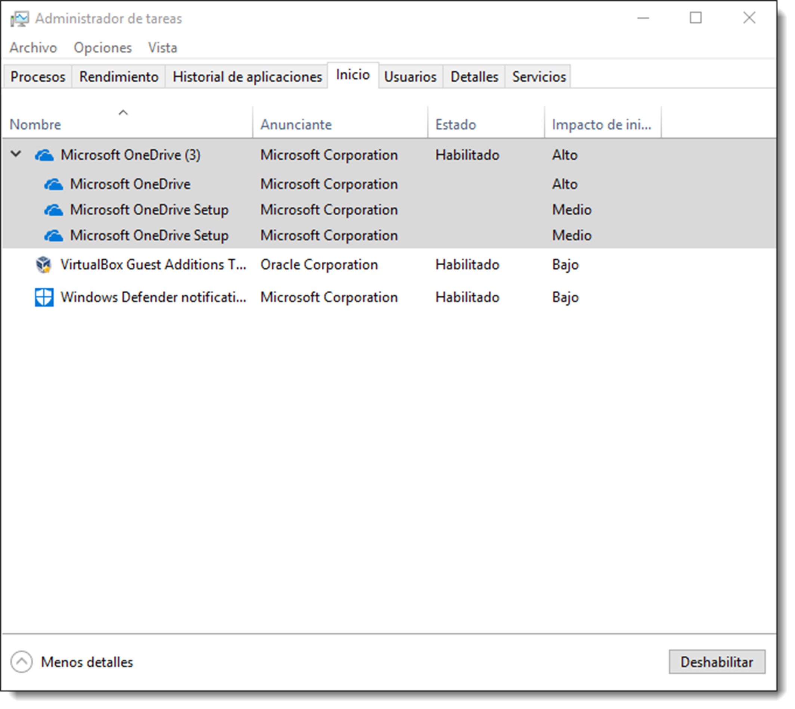

Gestión de los servicios y demonios
Para que el sistema operativo realice su trabajo, en ocasiones es necesario que disponga de programas que se ejecutan en segundo plano gestionando un recurso. Estos programas, conocidos como servicios o demonios en el entorno GNU/Linux, se mantienen a la espera a que algún proceso solicite uno de los servicios que ofrece. Por ejemplo, el servicio de red se sitúa entre la NIC y el proceso que necesite salir a Internet. En la mayoría de ocasiones, estos programas se ejecutan durante la carga del sistema operativo y son fundamentales para la gestión de los recursos que ofrece el sistema operativo, ya sean hardware o software.
Los sistemas operativos de Microsoft disponen de una herramienta gráfica para la gestión de los servicios. Se accede a ella en → → o escribiendo la palabra servicio en el buscador.

Cada uno de estos servicios puede configurarse de cuatro formas diferentes:
- Deshabilitado, no es posible iniciar el servicio a través de otro servicio
- Manual, no se inicia con el sistema, debe ser arrancado de forma manual
- Automático, se inicia durante el proceso de arranque del sistema.
- Automático (inicio retrasado), se inicia después de que todos los servicios del sistema se hayan cargado en memoria principal.
A través de esta herramienta será posible controlar el estado del servicio, el fichero ejecutable que lo inicia, sus dependencias si las tuviera o qué acciones hay que realizar si el servicio fallase durante su inicio.
Además de este completo software, Microsoft Windows 10 Professional dispone de una utilidad para la gestión de los servicios de inicio retrasado, aquellos que se inician cuando todos los servicios del sistema han sido cargados en memoria principal. Estos servicios suelen estar asociados a software instalado con posterioridad al sistema y que ejecutan una tarea muy específica. A través de la pestaña Inicio de la herramienta Administrador de tareas se controlan este tipo de servicios, aunque también es posible realizar esta configuración desde la herramienta anterior.


En los sistemas operativos basados en GNU/Linux se dispone de varias herramientas basadas en CLI para realizar la administración de servicios, denominados demonios en terminología Unix. Cuando se configura un demonio en GNU/Linux se crean scripts para controlar su carga y descarga de memoria principal.
Hay diferentes sistemas de arranque según la distribución (init System V, upstart, launchd en macOS), pero systemd es el que se está imponiendo en casi todas ellas. En systemd el concepto de nivel de ejecución existe solo por compatibilidad; hoy se trabaja con objetivos (targets) y servicios que se activan de forma declarativa. En Ubuntu también se usa systemd.
Unidades objetivo y servicios
El componente básico de systemd es la unidad o unit. Existen varias: servicios, sockets, periféricos, objetivos, etc. Un objetivo es básicamente el punto de sincronización entre unidades en espera. De este modo, dispondrá, por ejemplo, de unidades objetivo correspondientes a cada nivel de ejecución, pero puede llamarlas como quieras.
Las objetivos o los servicios que deben ser gestionados por el sistema durante el arranque están en /etc/systemd/system, en forma de enlaces simbólicos o copias. El catálogo de unidades proviene de /lib/systemd/system.
Los servicios acaban con el sufijo .service. Vamos a ver el contenidos de estos ficheros:
/etc/systemd/system$ cat syslog.service
[Unit]
Description=System Logging Service
Requires=syslog.socket
Documentation=man:rsyslogd(8)
Documentation=https://www.rsyslog.com/doc/
[Service]
Type=notify
ExecStart=/usr/sbin/rsyslogd -n -iNONE
StandardOutput=null
Restart=on-failure
# Increase the default a bit in order to allow many simultaneous
# files to be monitored, we might need a lot of fds.
LimitNOFILE=16384
[Install]
WantedBy=multi-user.target
Alias=syslog.service
Si nos fijamos en la linea que tiene de WantedBy. Sirve para indicar que este servicio es necesario para el objetivo multi-user.target (lo que correspondrá por ejemplo al nivel 3 del init System V)
Ahora vamos a ver el fichero .target de un objetivo.
cat poweroff.target
# SPDX-License-Identifier: LGPL-2.1+
#
# This file is part of systemd.
#
# systemd is free software; you can redistribute it and/or modify it
# under the terms of the GNU Lesser General Public License as published by
# the Free Software Foundation; either version 2.1 of the License, or
# (at your option) any later version.
[Unit]
Description=Power-Off
Documentation=man:systemd.special(7)
DefaultDependencies=no
Requires=systemd-poweroff.service
After=systemd-poweroff.service
AllowIsolate=yes
JobTimeoutSec=30min
JobTimeoutAction=poweroff-force
[Install]
Alias=ctrl-alt-del.target
Nos fijamos en Requires y After. En este objetivo requiere (Requires) de un servicio en concreto y su ejecución después de la unidad que pone (After).
Acciones
El comando systemctl permite controlar la ejecución de servicios.
systemctl
UNIT LOAD ACTIVE SUB JOB DESCRIPTION >
proc-sys-fs-binfmt_misc.automount loaded active running Arbitrary Executable File Forma>
sys-bus-pci-drivers-nvidia.device loaded active plugged /sys/bus/pci/drivers/nvidia >
sys-devices-pci0000:00-0000:00:02.0-drm-card0-card0\x2deDP\x2d1-intel_backlight.device loaded active plugged /sys/devices/pci0000:00/0000:00>
sys-devices-pci0000:00-0000:00:14.0-usb1-1\x2d14-1\x2d14:1.0-bluetooth-hci0.device loaded active plugged /sys/devices/pci0000:00/0000:00>
sys-devices-pci0000:00-0000:00:14.3-net-wlp0s20f3.device
# Parada y reinicio de unidades
systemctl stop cups.service
systemctl start cups.service
systemctl restart cups.service
systemctl reload cups.service
# Consulta de estado con logs recientes
systemctl status cups.service --no-pager
journalctl -u cups.service -n 20 --no-pager
El siguiente comando indica cuáles son las unidades objetivo activas:
systemctl list-units --type=target
UNIT LOAD ACTIVE SUB JOB DESCRIPTION
basic.target loaded active active Basic System
bluetooth.target loaded active active Bluetooth
cryptsetup.target loaded active active Local Encrypted Volumes
getty-pre.target loaded active active Login Prompts (Pre)
getty.target loaded active active Login Prompts
graphical.target loaded inactive dead start Graphical Interface
local-fs-pre.target loaded active active Local File Systems (Pre)
local-fs.target loaded active active Local File Systems
multi-user.target loaded inactive dead start Multi-User System
network-online.target loaded active active Network is Online
network.target loaded active active Network
nss-lookup.target loaded active active Host and Network Name Lookups
nss-user-lookup.target loaded active active User and Group Name Lookups
paths.target loaded active active Paths
remote-fs.target loaded active active Remote File Systems
slices.target loaded active active Slices
snapd.mounts-pre.target loaded active active Mounting snaps
snapd.mounts.target loaded active active Mounted snaps
sockets.target loaded active active Sockets
sound.target loaded active active Sound Card
swap.target loaded active active Swap
sysinit.target loaded active active System Initialization
time-set.target loaded active active System Time Set
time-sync.target loaded active active System Time Synchronized
timers.target loaded active active Timers
LOAD = Reflects whether the unit definition was properly loaded.
ACTIVE = The high-level unit activation state, i.e. generalization of SUB.
SUB = The low-level unit activation state, values depend on unit type.
JOB = Pending job for the unit.
25 loaded units listed. Pass --all to see loaded but inactive units, too.
To show all installed unit files use 'systemctl list-unit-files'.
Ejemplo práctico paso a paso: nginx
- Instala nginx desde repositorios:
sudo apt update
sudo apt install nginx
- Comprueba estado y puerto:
systemctl status nginx
ss -tnlp | grep nginx
- Deshabilita el arranque automático:
sudo systemctl disable nginx
- (Opcional) Override de servicio:
sudo systemctl edit nginx
Añade en /etc/systemd/system/nginx.service.d/override.conf:
[Service]
ExecStart=
ExecStart=/usr/sbin/nginx -g 'daemon off;' -c /etc/nginx/nginx.conf
- Recarga y valida:
sudo systemctl daemon-reload
sudo systemctl stop nginx
sudo systemctl status nginx
Este flujo cubre lo pedido en la Actividad de nginx en LXD (detener y evitar arranque).
Otros comandos útiles de systemd (Ubuntu)
- Mapear targets vs runlevels:
systemctl list-units --type=targetysystemctl get-default. - Ver dependencias y tiempos de arranque:
systemd-analyze blameysystemd-analyze critical-chain. - Ver unidades y su estado habilitado/deshabilitado:
systemctl list-unit-files --type=service. - Ver contenido efectivo de una unidad y sus drop-ins:
systemctl cat nginx. - Crear overrides sin tocar el fichero original:
sudo systemctl edit nginxgenera/etc/systemd/system/nginx.service.d/override.conf. - Forzar recarga de definiciones tras cambios:
sudo systemctl daemon-reload. - Logs:
journalctl -u nombre.service --since "-10m"(añade-fpara seguir en tiempo real). En Ubuntu el journal persiste si se habilita/var/log/journal(directorio creado y permisos correctos).